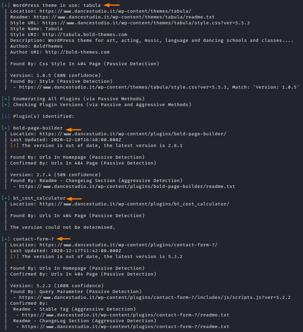

Plugins and Themes
For each Plugin and Theme found we can run “searchsploit
[plugin-name]” or “searchsploit [theme-name]” to find possible vulnerabilities in them.
Before starting
remember to update searchsploit with the –update option.
Alternatively WPScan has its own vulnerability
database that the tool can use, but it requires registration(FREE until 50 requests a day).
Here for more
informations:
https://wpscan.com/api-e, --enumerate [OPTS]
◇
vp → Vulnerable plugins
◇ ap → All plugins
◇ p → Popular plugins
◇ vt → Vulnerable themes
◇
at → All themes
◇ t → Popular themes
◇ tt → Timthumbs
◇ cb → Config backups
◇ dbe → Db
exports
1.
WPScan
wpscan --url https://www.dancestudio.it/ --enumerate ap,at,cb,dbe --random-user-agent
2.
ExploitDB
(searchsploit)
root@kali# searchsploit --update
root@kali# searchsploit tabula #theme
root@kali# searchsploit bold-page-builder #plugin
root@kali# searchsploit contact-form-7 #plugin